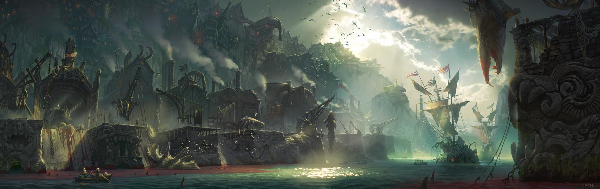
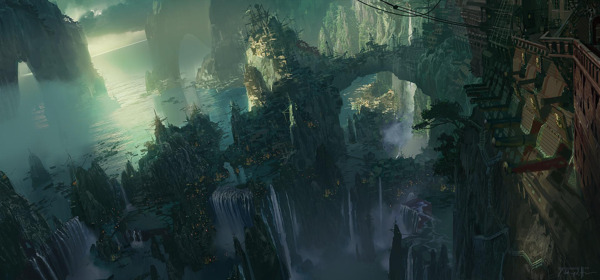
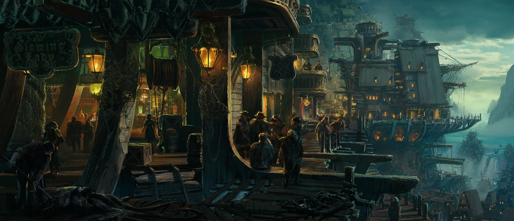
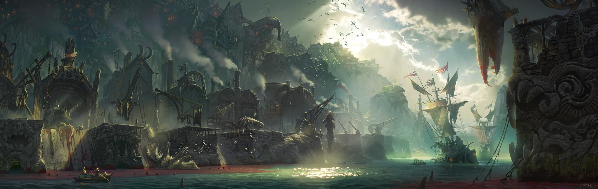
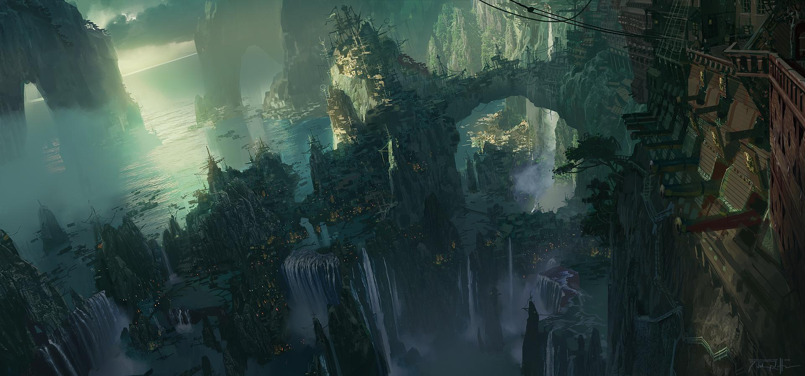
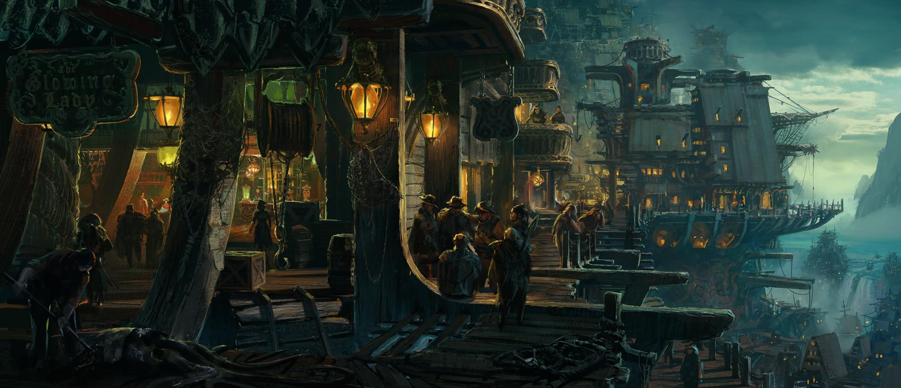

Nestled away in the Blue Flame Isles archipelago, Bilgewater is a port city like no other—home to serpent hunters, dock gangs, and smugglers from across the known world. Here, fortunes are made and ambitions shattered in the blink of an eye. For those fleeing justice, debt, or persecution, Bilgewater can be a place of new beginnings, for no one on these twisted streets cares about your past. Even so, with each new dawn, careless travelers can always be found floating in the harbor, their purses empty and their throats slit…
While incredibly dangerous, Bilgewater is ripe with opportunity, free from the shackles of formal government and trade regulation. If you have the coin, almost anything can be purchased here, from outlawed hextech to the favor of local crime lords.
With the recent removal of the last “reaver king” of Bilgewater, the city has entered a period of transition, while the most prominent captains try to agree on its future. But as long as there are seaworthy ships and crews to sail them, Bilgewater is likely to remain one of the most colorful and well-connected places in Runeterra.
Down on the slaughter docks, Miss Fortune springs a trap for wanted criminals Twisted Fate and Graves… but soon finds the tables turned against her.
 




